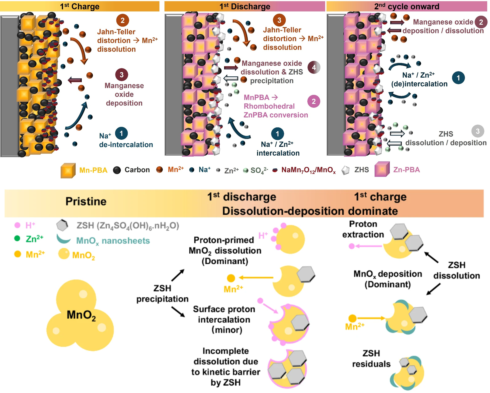

Fundamental Electrochemical Mechanisms
Exploring how battery materials transform during operation, with particular attention to coupled ion transport, phase transitions, dissolution–deposition reactions and electrochemical kinetics. Operando X-ray techniques help connect structural changes to measured performance.

Reaction Mechanism of Mn-Based Prussian Blue Analogues
Investigating the electrochemical transformation of Mn-based Prussian blue analogues in aqueous zinc electrolytes. The study combines electrochemical analysis, operando characterisation and mechanistic interpretation to distinguish intercalation from conversion and dissolution–redeposition processes. The results highlight the influence of electrolyte composition, structural evolution and manganese chemistry on reversible capacity and cycling behaviour.
Read published study ↗Electrochemical Mechanisms of MnO₂ Cathodes
Examining the contributions of manganese dissolution, deposition and surface passivation to the cycling response of aqueous zinc–manganese dioxide batteries. Electrochemical and operando observations help explain how reaction conditions affect capacity and structural evolution, offering mechanistic insights for more reliable cathode design.
Read published study ↗